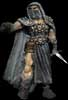

|
Les opérations secrètes sont très importante en période d'incertitude. Plusieurs personnes sont
devenues maitre dans l'art du camouflage et de la furtivité. Vous devez sélectionner une des deux grandes guildes,
celle de l'espionnage, experte dans l'information et le sabotage, ou celle du vol, experte dans l'acquisition des biens ennemis.
Ce choix vous permettra d'exceller dans les opérations de cette guilde. Les opérations de la guilde
non sélectionné seront quand même disponible, mais seront beaucoup moins efficace. Vous ne pouvez
faire partie que d'une seule guilde, exception faite aux hobbits qui ont accès aux deux. Choisissez judicieusement. La guilde doit recruter des membres afin d'effectuer les différentes missions. Lors d'une mission vous devez choisir le nombre de voleurs/espions que vous allez envoyer jusqu'à un maximum de 3 voleurs par acres. Leur nombre est un facteur déterminant dans leur chance de réussite. La seigneurie qui sera la cible d'une opération peut se défendre de deux façons. Le premier moyen efficace est d'engager plus de 10 voleurs/espions. Étant donné que ce sont des gens très renseignés, il leur est possible de détecter les voleurs/espions ennemis avant qu'il frappe. La seconde façon est la construction de tour de guet qui permettent directement d'empêcher le vol. Lors d'opérations, il est possible que certain de vos membres se fassent capturer. Dans certain cas ils vont vous dénoncer. Cela permet à la seigneurie cible de connaître son assaillant. Dans d'autre cas il vous sont fidèle et ne vous dénonceront pas, votre opération reste donc anonyme. Si une seigneurie est fortement attaqué par des voleurs, elle portera une meilleure surveillance sur ses biens et rendra les opérations ennemi beaucoup plus dure à réussir. Chaque seigneurie dispose d'un chef de guilde. Chacune des opérations effectuées par les membres de la guilde vont avoir une influence sur la réputation de leur chef. Les opérations réussies permettront au chef d'augmenter sa réputation. Les échecs vont la diminuer. La réputation joue un rôle important lors de l'embauche de vos membres. Meilleur sera  la réputation du chef et moins les gens demanderons d'argent pour faire partie de votre guilde. Le niveau Terreur mondial par exemple, vous permet une réduction des coûts d'embauche de 50%. Si par contre votre réputation est plus basse que le niveau amateur, les gens demanderons plus d'argent pour faire partie de votre guilde.Un autre avantage de la réputation est la possibilité d'étendre la quantité de cible potentiel de votre seigneurie. Il sera mal vu de vos membres que vous vous attaquiez à un royaume trop petit ou trop grande. Si vous tentez quand même la manoeuvre, votre chef perdra de sa réputation. La grosseur de votre cible est déterminé par la réputation de votre chef. |
|